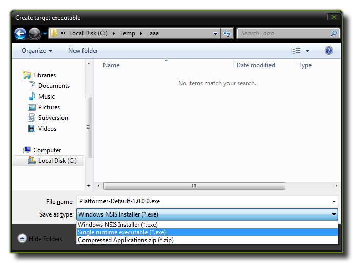

With the information in the preceding sections of this manual
you can begin to create your games, but when your game is finished
you obviously want other people to play it. You can of course
export a *.gmz file and let them use GameMaker: Studio to
play it but this is normally not what you want! First of all, you
don't want others to be able to change the game or get access to
all your hard work, and secondly you also want people to play the
game even if they do not have a copy of GameMaker: Studio.
So you would like to create a stand-alone application or package of
your game, or upload it as HTML5 to a site on the internet so that
everyone can play it!
Creating stand-alone applications is very easy with
GameMaker: Studio. First you have to choose the "target" for
the files to be made which means choosing whether you wish to
create an *.exe for Windows, generate JavaScript and HTML for use
in a browser, or create a package for one of the other target
modules. Each of the individual targets has their own settings and
you must ensure that they are correctly configured in the Global
Game Settings and Preferences
before you continue.
Once everything is correct, you then go into the File menu
and select the item Create Executable or you can press the
following button, found on the main IDE toolbar beside the Play and
Debug buttons:
Create
Executable For Target
Either option will open a save window where you can give the final
name that you wish to use for your game file. Once you have done
this, the necessary files will be generated so that you can
distribute it as you wish.
NOTE: Before doing a final build of your project for release, you should always clear the Asset Compiler Cache (using the green "broom" icon at the top of the IDE) to ensure that all cached files are recreated and no stale files corrupt your final game.
Each target option saves to a platform specific format:
- If you have the setting as "Windows" in the main GameMaker: Studio window, then only a Windows compatible file will be made. This can be an installer, a stand-alone *.exe or a *.zip. The export file type is chosen from a drop-down menu within the "Save" dialogue itself, as shown by the image below:  Please note that the "Single Runtime Exe" is designed for use only for quick testing and should not be used for distribution (use the Zip or Installer options). When creating a single EXE you can get issues when saving files and it may not run on certain machine conficurations.
- If you have chosen to build HTML5, then an index.html (default name, but you can give your own name too) along with a folder containing your game's files will be created and saved to the specified location. For your game to work you will need both of these to be uploaded to a server. The index.html can also be customised to show your game with a different background colour, or at a different position etc... but a knowledge of the HTML language is necessary for this (see the HTML5 Tab of the Global Game Settings).
- For Android devices, a *.apk file will be generated which can be used directly on any Android devices or uploaded to the Google Play or Amazon stores (or any other site that accepts Android apps).
- For an iOS or Mac build you will need all the appropriate developer permissions and an Apple Mac computer. GameMaker: Studio will create a *.dish file which you will then need to prepare in the Application Oven app on a Mac. This will then generate your iOS or Mac app for you.
- If you have bought GameMaker: Studio through Steam then you can also compile to the Steam Workshop. For more information see here.
Please note: GameMaker: Studio uses a C++ runner to
create all final games and apps. The previous GameMaker versions
used Delphi, so this means that any game imported from previous
versions may not work without certain changes.
For further information on how to compile a final game for your
target platform, and for details on how to upload these to the
various app stores available, please see the YoYo Knowledge
Base.
Once you have created a stand-alone application or package for
your game you can then give the file to other people or place it on
your website to download. You can also upload these files to the
different hosting services for individual distribution or to online
stores (like Google Play, iTunes or the MS Store) for general
distribution and retail.
Further information on these formats and file creation can be found
on the YoYo Knowledge Base.
You are free to distribute the games you create with GameMaker:
Studio in any way you like, and this means that you can even
sell them! Of course, this assumes that the sprites, images, and
sounds you used to make it can be distributed or sold as well and
that you have the legal rights to all assets. See the enclosed
license agreement for more information on this (available on the
Licences
Tab).